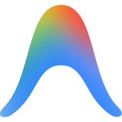
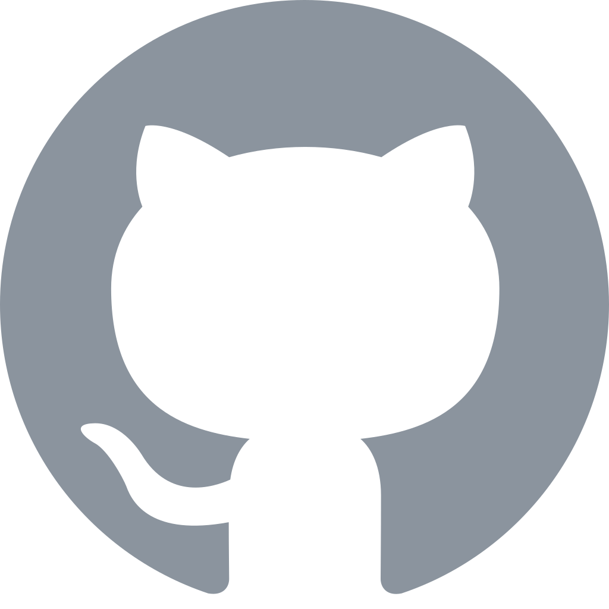
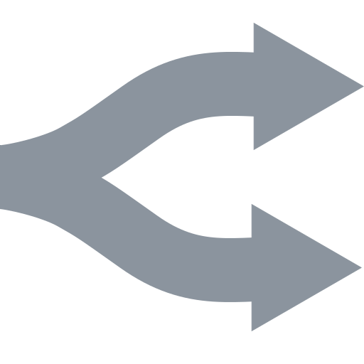

Providers
All your subscriptions, one glance.
It reads the logins your tools already keep on this PC. Most providers need no setup at all.
Claudeclaude.ai or Claude Code
Codex / ChatGPTcodex login

Google Antigravityagy · multi-account

GitHub Copilotgh auth · auto
OpenCode Golocal keys · auto

OpenRouterAPI key
z.ai GLM CodingAPI key
Kimi CodeAPI key
MiniMax CodingAPI key
DeepSeekAPI key · balance
MoonshotAPI key · balance
Missing one?open an issue